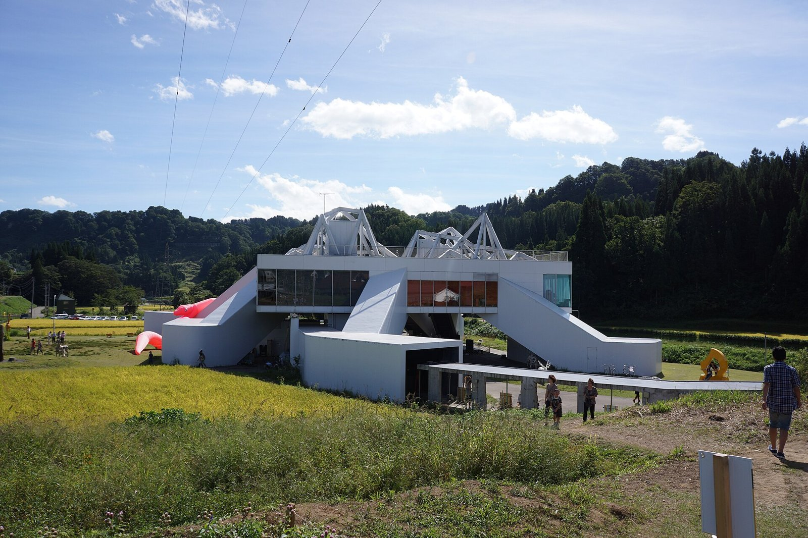
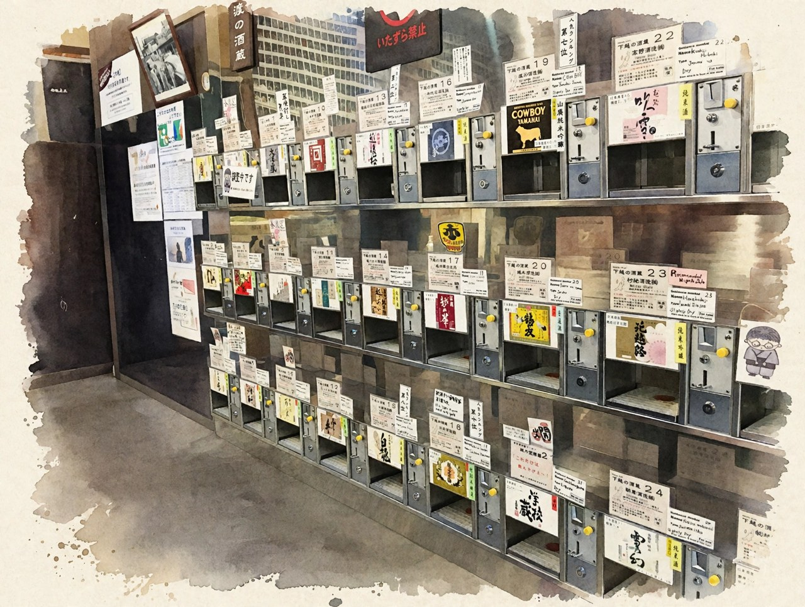
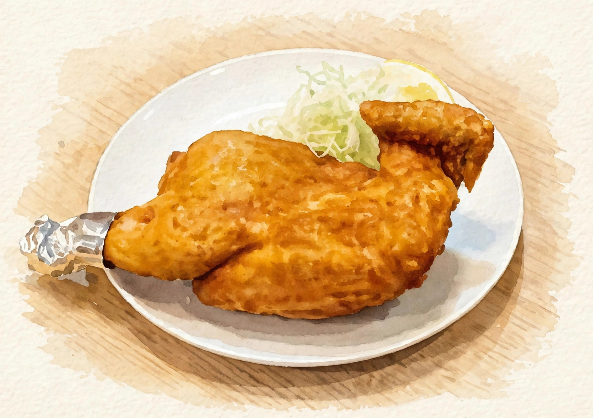
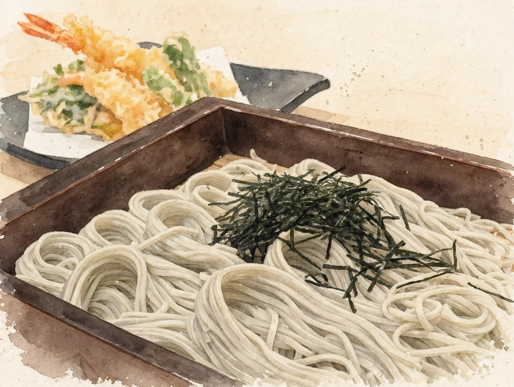

2誌に選ばれた、という事実
2026年秋、米国の大手旅行誌2誌が「2027年に行くべき場所」を発表し、新潟県が両方に入りました。しかも、どちらのリストでも日本から選ばれたのは新潟県だけです。新潟県観光協会によれば、同じ県が同じ年に米国の大手旅行誌3誌（ナショナルジオグラフィック、コンデナスト・トラベラー、トラベル＋レジャー）のうち2誌に選ばれるのは、2013年以来のことです。
理由の1つ目 ― 200の集落に広がる芸術祭
両誌がまず挙げたのが大地の芸術祭 越後妻有アートトリエンナーレです。十日町市と津南町の山里を舞台にした世界最大級の芸術祭で、第10回となる2027年は7月17日から11月7日まで開催されます（火曜・水曜は定休）。作品は田んぼの中、廃校、空き家など、およそ200の集落に点在します。コンデナスト・トラベラーは、棚田とブナ林の里山をアートで再生する取り組みとして紹介しました。


原典が実名で挙げた作品は、清津峡の「Tunnel of Light」（MADアーキテクツ）と、廃校に残るクリスチャン・ボルタンスキーの「最後の教室」です。コンデナストはこの地域を、オーバーツーリズムへの答えとして位置づけました。大都市をやめて、訪れることが里山の暮らしを支える場所へ行こう、という提案です。

もう一人、150年さかのぼった作家を。ボルタンスキーを見に来た方にこそ見てほしいのが、「越後のミケランジェロ」と呼ばれる彫工・石川雲蝶（1814〜1883）です。芸術祭の里から新潟市へ抜ける途中の魚沼にある西福寺では、開山堂の天井一面に雲蝶の大作「道元禅師猛虎調伏之図」が広がり、その寺は「越後日光」とも呼ばれます。雲蝶もまた、生と死のあわいを彫った人でした。堂内の柱には、見る角度で表情が変わる幽霊の彫刻が隠れています。150年を隔てて、同じ雪国で同じ問いを彫った二人の作家です。
そして、現地で食べてください。芸術祭の主舞台・十日町市は、へぎそばの本場でもあります。覚えておきたい3店は、布海苔つなぎを考案したとされる初代の店・小嶋屋総本店（1922年創業）、へぎそばと天ぷらで岡本太郎にも愛された名代生そば 由屋、そして松代で作品のすぐそばにあり、山菜の天ぷらと手打ちの布海苔そばを出す割烹そば処 松苧です。
理由の2つ目 ― 発酵の文化
ナショナルジオグラフィックのもう1つの理由は、味でした。豪雪、清らかな水、米どころ。新潟には何世紀も続く発酵文化があり、酒蔵は県内に88と全国最多です。冬には多くの蔵が試飲のために門戸を開きます。
長岡市の醸造の町・摂田屋では、昔ながらの味噌蔵、団子屋とパン屋、1548年創業の酒蔵などを歩いて巡る「発酵トリップ」が楽しめます。レストランHAKKO HOUSEでは、鈴木将シェフが発酵食品だけで組み立てる11品のコースに、酒のペアリングを合わせます。その全部を味わえるのが、越後湯沢駅のぽんしゅ館です。芸術祭の里への玄関口にあるこの店では、500円でお猪口5杯、県内の酒蔵の代表銘柄が並ぶ利き酒マシンの壁から選んで注ぐことができます。新潟市にも、新潟駅構内にぽんしゅ館があります。
年に一度、その全部が一つの会場に集まります。毎年3月に新潟市の朱鷺メッセで開かれる「にいがた酒の陣」は、日本最大級の日本酒イベントです。県内80を超える蔵が、500を超える銘柄を持ち寄ります。コロナ禍前には2日間で14万人が訪れ、現在は午前・午後の入れ替え制で人数を絞って開かれています。県内外から酒好きが集まる催しです。
ワイン好きの方なら、ピンとくるかもしれません。日本酒にも、料理に合わせて銘柄を選ぶ習慣があります。そして酒に合わせて食べる料理を「つまみ」「あて」といい、杯と一緒にゆっくり楽しむものとされています。
新潟市の古町は、そんな酒好きが集まる街です。高級店から大衆店まで軒を連ね、酒の陣の会場・朱鷺メッセからも行きやすい場所にあります。古町は江戸時代、日本三大花街の一つとされ、東京の新橋、京都の祇園と並び称されました。今も運が良ければ、街を歩く芸妓の姿に出会うことができます。夕食はぜひ古町で、日本酒とつまみ、あてで楽しんでください。もちろん、日本酒や和食に飽きた方もご安心を。フレンチやイタリアンの店も点在していて、それぞれに美味しい店が揃っています。
筆者の独断で選ぶ、古町の夜の店です（順位ではありません）。
- 酒と飯 古今（ここん） ― 県内外の銘酒を常時20種以上、グラス500円で。手間をかけた創作料理が肴になる、大人の酒処
- 新潟古町 而今（じこん） ― 居酒屋の気軽さで、割烹の料理を。新潟の食材にこだわる和食店
- 古町さいとう ― 完全予約制・1日8名まで。おまかせコースのみ、つまみを少しずつ何品も出す、酒飲みの店
- Bar FARO ― 締めの一杯に寄りたいバー
- 柳都古町 旬菜 すゞ家 ― 観光で来た方にまず勧めたい店。もとは芸妓の置屋だった建物で、花街の雰囲気の中、郷土料理と地酒を楽しめます
そして、あなたがお金持ちなら。予算を気にせず行くべき店もあります。
- 料亭 鍋茶屋 ― 弘化3年（1846年）創業。登録文化財の木造三階建てで、芸妓を呼べる古町花街の中心
- 日本料理 雪花 ― 月替わりの会席で新潟の旬を。村上牛のA5まで揃います
- 日本料理 行形亭 ― 300年近い歴史。2000坪の庭園と離れの座敷でいただく会席
- 兄弟寿し ― 「新潟前」のおまかせのみ、地元の素材だけで握ります（寿司特集にも掲載）
- 登喜和鮨 新潟店 ― 新発田の名店の新潟店。食材の99%が新潟産という徹底ぶり
古町で昼間にへぎそばを食べそびれた方に朗報です。新潟には、酒の後の〆に蕎麦を食べる習慣があります。深夜まで開いている蕎麦屋があるのも、この街の魅力です。
- 孫四郎そば 古町店 ― 夜7時半から明け方まで。飲んだ後に老舗のへぎそばで〆る、古町の定番です
- 西堀そば ― 2026年春に開店。深夜2時半まで、手打ちの二八蕎麦と蕎麦前で〆られます

雪国と、黄金の島
新潟は、人が住む場所としては世界有数の豪雪地です。山間部では雪が12メートル（40フィート）積もることもあり、スキー場は55か所。東京から新幹線で約1時間の湯沢から、妙高までが並びます。沖には佐渡島があり、佐渡金山は2024年にユネスコの世界文化遺産に登録されました。2027年夏、鼓童を中心とした「アース・セレブレーション」は40回目を迎えます。復活したトキや、たらい舟でも知られる島です。
湯沢は、その近さも圧巻です。越後湯沢駅から数分で、ゲレンデへ向かうロープウェイが出ています。さらに冬になると、ゲレンデ直結の新幹線駅「ガーラ湯沢駅」が開業します。改札を出たら、もうゴンドラです。
新潟に住む筆者から ― 2誌が書かなかったこと
このサイトは、新潟県に住む筆者が作っています。2誌の選出は的を射ていましたが、誌面は限られています。地元に住む立場から、少しだけ付け加えます。
- ぽんしゅ館の正直なところ。あの酒の壁の前では、地元の人間でも種類の多さに圧倒されます。小さな杯で5つ味わえば、この県が発酵の県だという意味が分かります。
- 芸術祭は、終わっても終わらない。約200点の作品は一年中、集落に残っています。会期を外して行けば、雪の中で廃校の作品を独り占めできることもあります。
- 冬こそ新潟です。ここでは雪は背景ではなく、素材です。雪室で野菜は甘くなり、酒は深くなり、萬代橋も弥彦神社も別の場所になります。
- 新潟の人が食べるものを食べる。有名店の名前より、新潟の人が考えずに注文するものを。せきとりのカレー味の半身揚げ、布海苔をつなぎに打ち、木のへぎに盛るへぎそば、卵でとじないタレかつ丼。この3つが新潟の食卓です。



行き方
- 東京 → 越後湯沢：上越新幹線で約1時間。芸術祭を訪れる人の多くは、ここから北越急行ほくほく線に乗り換えて、まつだい駅や十日町駅へ向かいます。越後湯沢駅の中のぽんしゅ館は、その通り道にあります。ここはノーベル賞作家・川端康成の『雪国』の舞台になった町でもあります。
- ロック好きなら「湯沢」の名前を覚えておいてください：毎年7月、湯沢町の苗場スキー場では日本最大級の野外音楽フェス「フジロックフェスティバル」が開かれます。オアシス、レディオヘッド、ボブ・ディラン、ビョークらがそのメインステージに立ってきました。
- 東京 → 新潟市：上越新幹線で約2時間。
- 佐渡島：新潟港からフェリーとジェットフォイル（ジェットフォイルで約1時間）。
- 越後妻有は山里の地域です。レンタカーか、芸術祭のツアーバスがあると回りやすくなります。
原典を読む
- National Geographic — Best of the World 2027 と 新潟ガイド
- Condé Nast Traveler — The 27 Best Places to Go in 2027
- Discover Niigata ― 新潟県の公式観光サイト（英語）
この選出を原典から読み解いた日本語の連載「新潟はなぜ選ばれたのか」（全5回）を、noteに公開しています。マガジン「新潟はなぜ選ばれたのか」